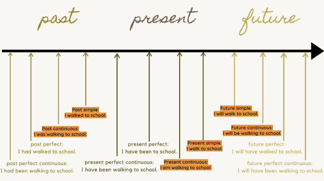
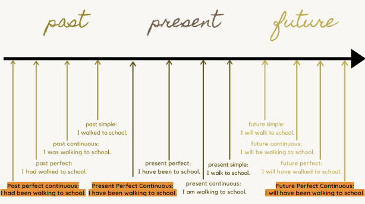

We use the past perfect tense when we focus on a completed action that happened before another completed action in the past.
Example:
We use the present perfect tense when an action started in the past and is still happening in the present.
Example:
We use the future perfect tense when talking about an action that must happen first so that another action can happen.
Example:

To use the past perfect continuous tense, we need to focus on the duration one action took before another action happened.
Example:
When we use the present perfect continuous tense, we focus on the duration of an action that started in the past and is still continuing in the present.
Example:
When using the future perfect continuous tense, we focus on the duration a future action must take before another action in the future can happen.
Example: